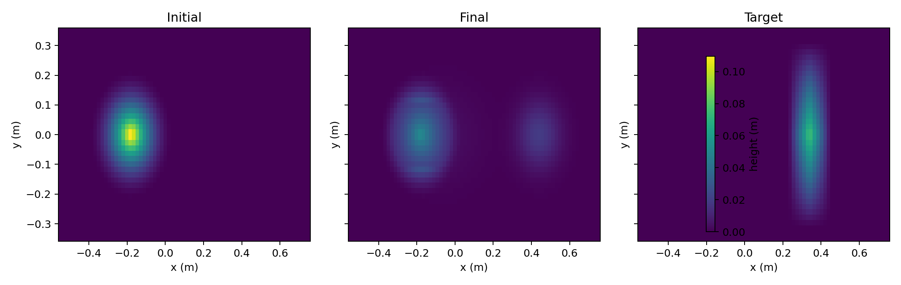
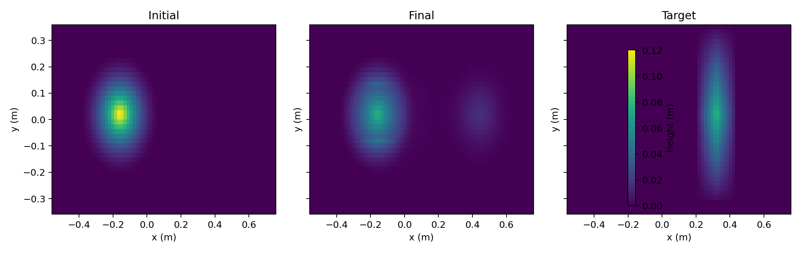
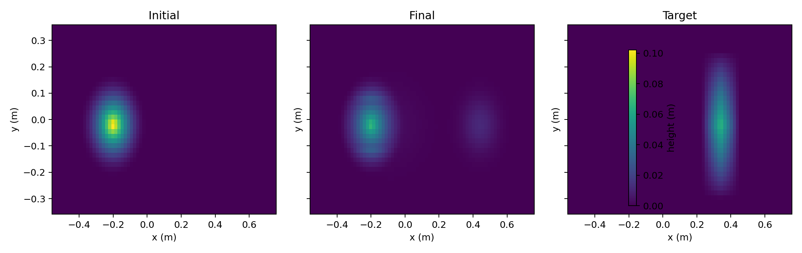

Earthmoving Simulation Review
Terrain deformation, soil calibration, randomized scale, and sim-to-field diagnostics.Gate Status
pass
Throughput
287.91/s
Best Scenario
shallow_blade_slip
Deposit Progress
0.510 m
Calibration Error
0.3474
Jobsite Decision
needs_calibration_before_field_trial
Readiness Signals
Quality gate
pass
Earthmoving realism and throughput thresholdsJobsite decision
needs_calibration_before_field_trial
Cycle-time, productivity, placement, and rework-risk scorecardScale throughput
287.91 episodes/s
Randomized batch evaluation speedBest terrain match
shallow_blade_slip
RMSE 0.01090Mean deposit progress
0.510 m
Centroid displacement from cut region to deposit regionLargest sim-to-field gap
baseline_push
Prioritize field measurement and calibration of `cohesion` because it strongly drives `terrain_profile_rmse`.Scenario Results
| Scenario | Moved Volume | Deposit Progress | Terrain RMSE | Volume Error | Runtime |
|---|---|---|---|---|---|
| shallow_blade_slip | 0.000587 | 0.5029 | 0.010896 | 0.000000 | 0.00236 |
| baseline_push | 0.001113 | 0.5147 | 0.011767 | 0.000000 | 0.00246 |
| cohesive_soil | 0.000871 | 0.5120 | 0.014993 | 0.000000 | 0.00255 |
Jobsite Autonomy Scorecard
| Scenario | Decision | Productivity | Cycle Time | Target Capture | Bottleneck |
|---|---|---|---|---|---|
| baseline_push | tune_before_field | 6.71 | 10.75 | 0.344 | cycle_productivity |
| cohesive_soil | tune_before_field | 5.25 | 10.75 | 0.357 | cycle_productivity |
| shallow_blade_slip | tune_before_field | 3.54 | 10.75 | 0.322 | cycle_productivity |
Top Sensitivities
| Soil Parameter | Metric | Correlation |
|---|---|---|
| blade_coupling | moved_volume | 0.9667 |
| cohesion | terrain_profile_rmse | 0.9408 |
| compaction_rate | terrain_profile_rmse | 0.8594 |
| spillover_rate | terrain_profile_rmse | -0.7478 |
| friction_angle_deg | terrain_profile_rmse | 0.7109 |
| spillover_rate | moved_volume | -0.4914 |
Terrain Plots


